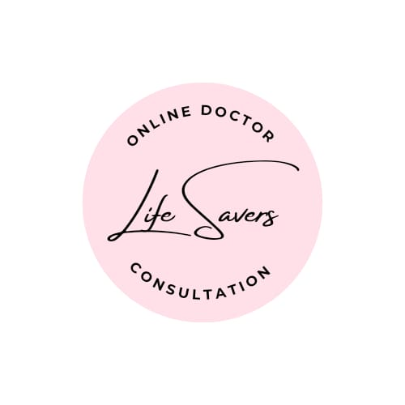

|  |
|
| EDUCTION QUALIFICATION | MBBS, MD, MS, DNB ,MHA |
| NAME OF THE INSTITUTE | ALL INDIA INTITUTE OF MEDICAL SCIENCE |
| EXPERIENCE | 15 YEARS EXPERIENCE IN HOSPITAL ADMINISTRATION |
| MY KEY SKILLS | Leadership, decision-making, and crisis management Knowledge of NABH/NABL accreditation, healthcare laws, and ethics Strategic planning and patient care advocacy |
| CERTIFICATE | Fellowship in Hospital Administration (FHA) PG Diploma in Healthcare/Hospital Management |